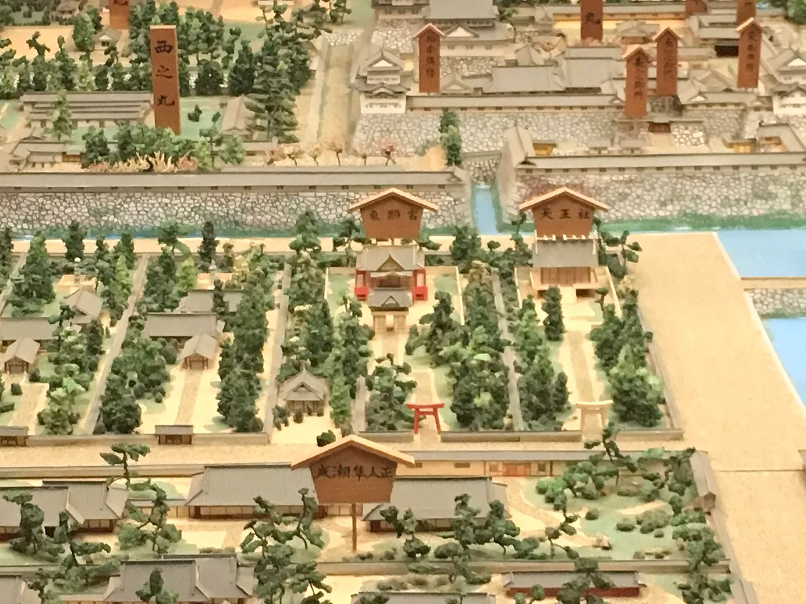

Aichi 旅遊指南（為日語學習者撰寫）
重點
愛知以日本第四大城市名古屋為中心，是汽車工業的心臟（豐田汽車的所在地），也是名古屋城和古老熱田神社等feudal地標的所在地。其三河灣沿岸提供小島，以及Inuyama城的原始木製城堡，是日本最古老的城堡之一。
📍 必看: Nagoya Castle (名古屋城) · 🥢 必嚐: Miso katsu (味噌カツ) · 來源
名古屋的城堡和工業，加上武士時代的歷史。

🍜 美食 ▰▰▰▱▱ 🏯 文化 ▰▰▰▰▰ 🏙 城市 ▰▰▰▰▰ 🚄 交通 ▰▰▰▰▱ 🌿 自然 ▰▱▱▱▱
🥢 必嚐: Miso katsu (味噌カツ) · 📍 必看: Nagoya Castle (名古屋城)
🗣 ここの味は格別ですね。 Koko no aji wa kakubetsu desu ne.
愛知縣以名古屋為中心，是日本第四大城市，也是工業強市（豐田汽車的故鄉）。擁有重建的城堡、主要神社，以及豐富的在地美食文化。
必看景點
★ Nagoya Castle (名古屋城)★ Atsuta Jingu / Atsuta Shrine (熱田神宮)★ Inuyama Castle (犬山城)💎 Tokoname Pottery Footpath / Dokan-zaka (常滑やきもの散歩道)💎 Arimatsu Shibori district (有松絞り)
- Nagoya Castle
- Atsuta Shrine
- Toyota Commemorative Museum
- Inuyama Castle
必吃美食
★ Miso katsu (味噌カツ)★ Hitsumabushi (ひつまぶし)★ Miso nikomi udon (味噌煮込みうどん)💎 Gamagori udon (蒲郡うどん)💎 Toyohashi Inari udon (豊橋カレーうどん style / Inari udon)
名古屋「meshi」：味噌豬排、hitsumabushi鰻魚和手羽先雞翅。
如何前往與最佳季節
如何前往: 名古屋距離Tokyo約1小時40分鐘，距離Kyoto約50分鐘，可搭乘Tōkaidō Shinkansen前往。
最佳季節: 全年開放；是Tokyo和Kyoto之間方便的交通樞紐。
學個日語
おすすめは何ですか？
Osusume wa nan desu ka? — "用濃郁紅味噌醬淋在豬排上的菜肴，是名古屋的經典料理"
在地詞彙
味噌カツ
miso-katsu — 用濃郁紅味噌醬淋在豬排上的菜肴，是名古屋的經典料理
💡 小提醒
名古屋是前往岐阜Takayama或三重Ise的絕佳基地，適合當日往返。
資料來源: Japan National Tourism Organization (JNTO).
事實依官方旅遊資訊查核，觀點為我們所有。